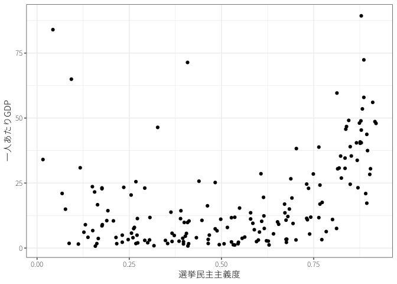
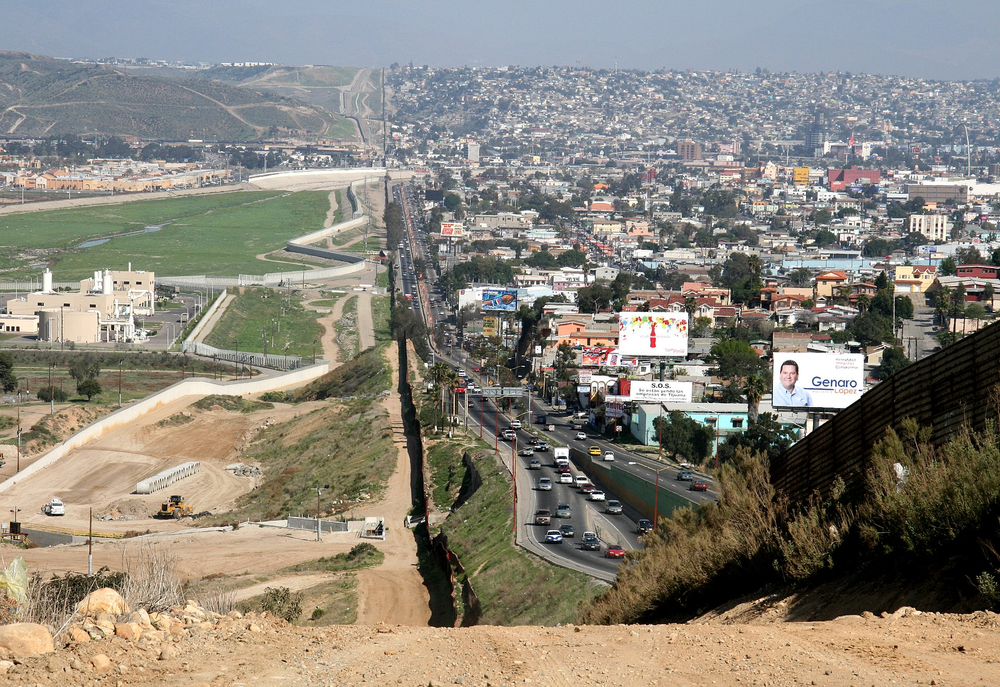
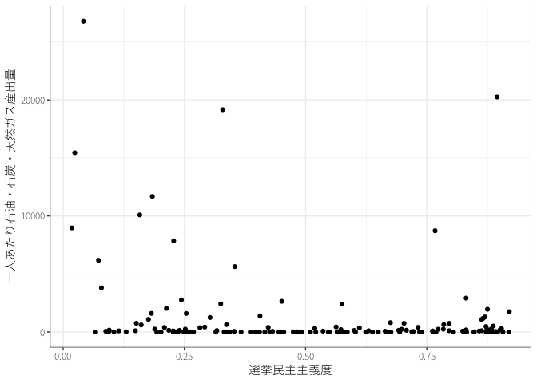
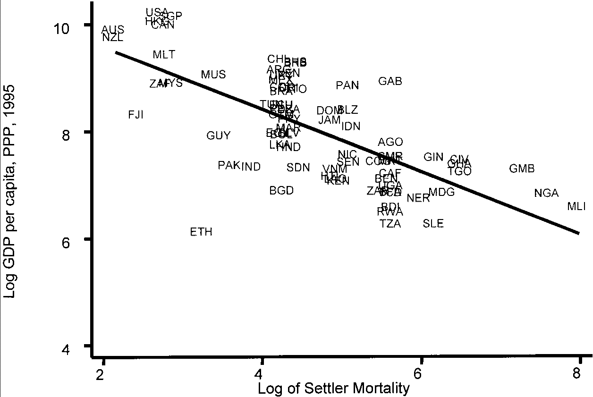
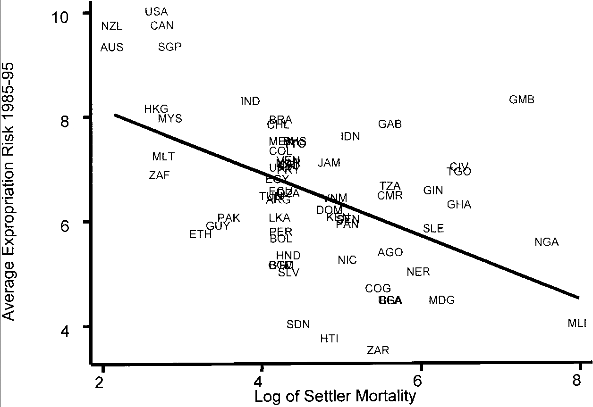
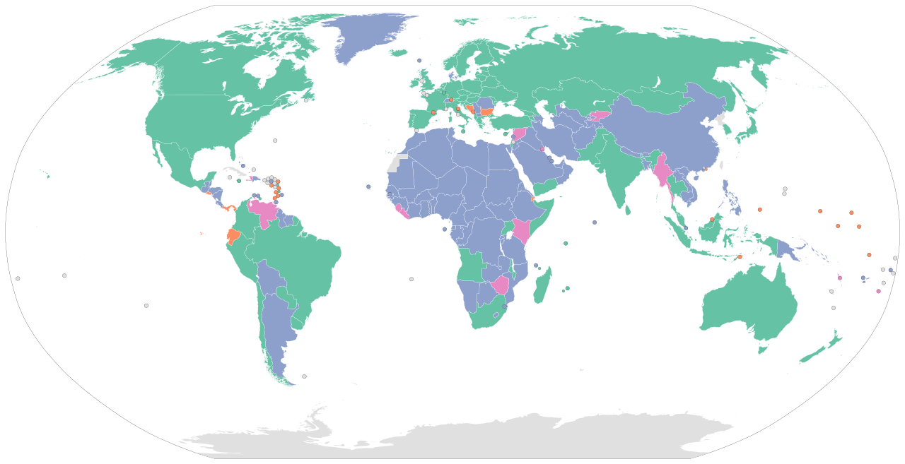
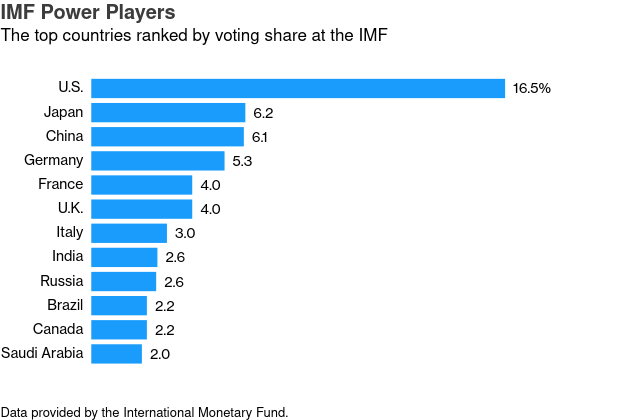
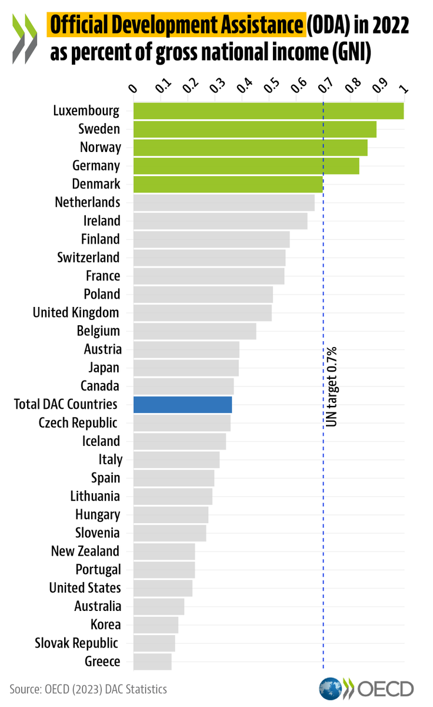

経済成長
国際公共政策学
はじめに
- 政治は経済成長に影響するのか？
- なぜ国ごとに経済的豊かさが異なるのか？
- 経済成長と不平等の縮小は両立するのか？
1 経済成長と国内政治
1.1 政治体制

世界全体で見ると経済成長／経済成長をしている国もいれば、そうでない国も
- 韓国や台湾は工業化に成功して経済成長
- サブサハラ・アフリカを中心に経済が停滞
地理（特に気候）や人種の違いが経済発展の違いを生む？
- ほとんど同じような地域（したがって地理的条件や人種構成も似ているはず）\(\leadsto\)全く異なる経済発展
\(\leadsto\)国家の違い、特に政治体制の違いが重要(Robinson 2006)
政府はインフラを供給＆所有権を保障\(\leadsto\)経済成長を促進
- インフラ：交通インフラ、公衆衛生や教育といった社会的インフラ
- 所有権を保障\(\leadsto\)市民は安心して経済活動（特に投資）に専念
政府にとっても経済成長することは望ましい／なぜそのような政策を実行できないのか？
- 大地主や大企業、都市部のエリートなど政権運営に必要な勢力の利益になるような政策（インフラ投資への反対、農民への課税や補助金）を行い、多数派の利益を損なう。
- 民族対立がある場合(Alesina と La Ferrara 2005)や権威主義体制である場合(Baum と Lake 2003; Stasavage 2005; Brown と Mobarak 2009)は経済成長が難しい。
1.1.1 資源の呪い
資源の呪い (resource curse)：農産物や資源が豊富な国では経済成長がしにい＆民主的な政治体制ができにくい現象(Ross 1999, 2015; Mehlum, Moene, と Torvik 2006)
- 経済成長ためのインフラ投資をする必要がない。
- 大地主や大企業に権力が集中する政治体制を構築
逆説的に、資源の乏しい国では経済活動を活発化させるためにインフラ投資や民主化を行う。

1.1.2 植民地支配
植民地支配\(\leadsto\)政治体制
- 大航海時代においてポルトガルやスペインは先に資源の豊富な南米／後発のイギリスやフランスは資源の乏しい北米に進出
- 南米ではプランテーションなど搾取的な体制が成立／北米では民主的な体制が成立\(\leadsto\)その後の経済発展(Engerman, Sokoloff, ほか 2000; Acemoglu と Robinson 2016)
北米に比べて熱帯病などで死亡率の高かった南米では移住が困難\(\leadsto\)原住民から資源を搾取する体制が構築\(\leadsto\)現代の低成長(Acemoglu, Johnson, と Robinson 2001)


植民地時代の死亡率が直接的に現代の経済水準に影響を与えているとは考えにくい\(\leadsto\)政治体制が経済成長に影響を及ぼしている
1.2 開発政策
1.2.1 輸入代替工業化
一般的に自由貿易は先進国と途上国のどちらにも恩恵をもたらすものだと考えられる
\(\leadsto\)従属理論 (dependency theory)：途上国は自由貿易によって搾取されているという考え（1950年代ごろ）
- 多くの後発開発途上国は農産品や資源、原材料など一次産品 (primary goods) を輸出
- 一次産品は生産者が非常に多い\(\leadsto\)市場原理によって価格が定まる
- 長期的に見て下降傾向にある
- 先進国の生産する工業製品は生産者の数が少ない寡占 (oligopoly) 状態\(\leadsto\)企業に価格決定力
\(\leadsto\)先進国は有利な交易条件 (terms of trade) の下で貿易
\(\leadsto\)経済成長（特に工業化）の戦略の一つとして輸入代替工業化 (import-substituting industrialization)
- 工業製品の輸入を制限し、自国内で製造できるようにする\(\leadsto\)工業化
- 政府は国営企業によってインフラを安価に供給し、補助金や減税、低金利ローンなどによって国内産業を優遇
- 工業化には成功する／市場原理に反して産業を保護\(\leadsto\)国際競争力が高まらず、輸出できないという問題
1.2.2 輸出志向工業化
1960年代、Four Asian Tigersと呼ばれる韓国、台湾、シンガポール、香港は輸出志向型工業化 (export-oriented industrialization) を採用
- 低金利ローンや減税、通貨安への誘導などを通じて輸出を振興
- これらの国や地域は急速な工業化と経済成長を達成\(\leadsto\)東アジアの奇跡
1980年代に南米などで債務危機\(\leadsto\)輸入代替工業化を採用している国は、返済のための外貨を獲得することが困難
- 債務返済のために国際通貨基金 (International Monetary Fund: IMF) から融資や債務削減を受ける\(\leadsto\)自由経済に合致するコンディショナリティを受け入れ
輸出志向型工業化を採用していた国も債務危機の影響を受けた／輸出によって外貨を獲得し、経済を回復
\(\leadsto\)冷戦の終結も相まって、1990年ごろにはほとんどの開発途上国が輸入代替工業化を放棄して、世界経済との繋がりを構築
2 経済成長と国際関係
現代のグローバル化の特徴の一つは資本の越境的な (transnational) 移動の拡大
- 通貨：自国通貨と他国通貨の交換（為替）
- 投資
- 融資：外国企業への融資、外国国債の購入
- 直接投資：外国における企業や向上の設置
- 間接投資：外国企業の株式の購入
- 援助：先進国による途上国の支援
2.1 通貨
為替 (exchange)：自国通貨で外国通貨を購入すること
- 為替の際の交換比率のことを為替レートと呼ぶ。
- 例えば、1USドルは140円と交換できる。
- 言い換えれば、1USドルの値段は（日本円にして）140円である。
自国通貨の価値が高く（低く）なる\(\leadsto\)多くの（少ない）外国通貨を購入
- 1USドルが130円になると円高
- 1USドルが150円になると円安
2.1.1 通貨の価値

固定相場制 (fixed exchange)：為替レートを一定に固定する場合
- 例：金本位制
変動相場制 (floating exchange)：為替レートを市場に委ねる場合
\(\leadsto\)変動相場制の下では需要と供給の法則に従って価格が決定
- 購買力平価：物価に基づいて為替レートが決定
- 日本が輸出\(\leadsto\)日本円の需要が高まる\(\leadsto\)円高
- 金利平価：金利に基づいて為替レートが決定
- アメリカの金利が上がる\(\leadsto\)USドルの需要が高まる\(\leadsto\)円安
中央銀行は外貨準備を用いて、為替レートの安定化のために為替介入を行うことがある。
2.1.2 近隣窮乏化政策
外国製品を輸入する場合は自国通貨で外国通貨を購入しなくてはいけない
\(\leadsto\)為替レートと貿易は密接な関係にある。
| 輸出 | 輸入 | |
|---|---|---|
| 自国通貨が高くなる | 減少 | 増加 |
| 自国通貨が安くなる | 増加 | 減少 |
- 例えば、480万円の車は1USドル110円なら約4.4万USドルで売れるが、120円（円安）だと4万USドル、100円（円高）だと4.8万USドルで売れる。
各国は通貨を切り下げることで輸出を促進
- しかし、他国に経済的負担を押し付ける近隣窮乏化政策 (beggar thy neighbour) となる。
\(\leadsto\)通貨切り下げ競争は囚人のジレンマの構造
2.1.3 国際通貨体制
金ドル本位制やドル基軸通貨体制：USドルと金の交換レートを保証し、各国は自国通貨とUSドルの為替レートを一定の範囲内に収める調整可能な固定相場制
- 各国は輸入による金の流出を恐れる必要がなし
- USドルを基軸通貨として受け入れる必要
- アメリカの圧倒的経済力を背景に金との交換を保証
- アメリカが輸入をする（貿易赤字を引き受ける）ことでUSドルを世界に供給
国際通貨基金 (International Monetary Fund: IMF) はブレトン・ウッズ体制を支える機関として設立
- 外貨準備が不足して固定相場を維持できない国を短期的に融資
- コンディショナリティ：融資の際の条件
USドルの供給が増える（ドル過剰）\(\leadsto\)アメリカの金準備が足りなくなる？
\(\leadsto\)流動性のジレンマ：ドルの供給によってドルの価値が信頼されなくなる
ニクソン・ショック：1971年、貿易赤字に不満を持っていたアメリカはUSドルと金の交換を停止
\(\leadsto\) 1973年に先進国は変動相場制に移行し、資本の移動を自由化
変動相場制のもとでは為替レートの変動が激しいときも\(\leadsto\)政策協調によって安定化
- 1985年のプラザ合意ではアメリカの貿易赤字を減らすためにドル安介入
- 円高による不況を回避するための金融政策\(\leadsto\)金利が低下\(\leadsto\)バブル経済が発生
2.2 債務危機
貿易に加えて国際的な投資も経済成長にとって重要な役割
\(\leadsto\)政府は国債 (sovereign bond) を発行し、資金を調達することで増税せずに財政支出を拡大
- ヘクシャー＝オーリン・モデルと同様、資本の潤沢な先進国の投資家は金利の高い途上国に融資をすることで利潤を拡大
財政支出が失敗し、税収が上がらず、債務の履行が困難\(\leadsto\)債務危機
- 債務国は緊縮財政 (austerity) によって支出を削減し、税収によって債務を返済する／デフォルトによって債務の履行を拒否する
- 債権国はできる限り債務を返還してほしい／デフォルトされることで国内の金融機関へ影響が波及するのを恐れて、救済 (bailout) する
\(\leadsto\)債務国も債権国もデフォルトすることは避けたいが、できる限り少なく（多く）返済したい（回収したい）ため、交渉問題に
2.2.1 国際通貨基金
国際通貨基金 (International Monetary Fund: IMF) ：約1兆USドルの融資能力を持つ世界最大の貸し手
- IMFでは経済水準を元に算出される出資額、クォータに比例して投票権が配分
- IMFにおける多くの決定には85%以上の賛成が必要\(\leadsto\)アメリカや欧州連合は事実上の拒否権

\(\leadsto\)IMFからのコンディショナリティを受け入れることで低金利の融資を得る。
- 市場からはIMFの基準に従った政策をしているという評判
- 緊縮財政や規制緩和はしばしば債務国の経済状況を悪化
2.2.2 債務の罠
債務の罠 (debt trap diplomacy)：過度な融資をすることで債務の返済を困難にさせ、代わりにインフラの使用権などを要求する
- 中国の一帯一路 (Belt and Road Initiative: BRI) は債務の罠ではないかと先進国は批判
2.3 多国籍企業
国債の購入以外に、対外直接投資 (foreign direct investment: FDI) も主要な国際的投資の一種
- 外国企業の買収や海外における工場の建設など、直接的に管理を行う投資
多国籍企業 (multinational corporation: MNC)：対外直接投資によって複数国に跨って経営する企業
- 海外で生産することで賃金や輸送コストを低く抑える
- 特に、グローバル・サプライチェーンでは比較優位のある部品を各国で生産し、それらを組み立て、製品を作る。
受け入れ国\(\leadsto\)雇用が増え、技術移転があるため多国籍企業を受け入れ／多国籍企業は税制や労働規制の優遇を求め、受け入れ国と対立することがある
- 特に、旧植民地における多国籍企業は資源採掘などを行っており、独立した旧植民地国では搾取的であるとして国有化されることも
途上国は国債による投資の受け入れに切り替える／債務危機とグローバル化の中で多国籍企業を受け入れ
法人税の減税や労働・環境規制の緩和によって多国籍企業を誘致できるのであれば、底辺への競争 (race to the bottom) が生じる？
- 互いに規制をしたほうが望ましいのに、誘致のために規制を緩和\(\leadsto\)互いに望ましくない状態に至る
- 囚人のジレンマの構造
\(\leadsto\)近年、各国で共通法人税の設定、企業の所在地ではなく市場国で課税ができるデジタル課税の導入について議論
一方、WTOやIMFのように対外直接投資や多国籍企業の問題に対処する包括的な国際機構や制度は存在していない
- 対外直接投資を巡るルールは二国間投資協定 (bilateral investment treaty: BIT) で定め、法的な紛争は投資仲裁によって解決
2.4 開発援助
発展途上国の経済成長に貢献するものとして政府開発援助 (official development assistance: ODA)

{kind=link}
- 日本では政府がODA大綱を決定し、国際協力機構 (Japan International Cooperation Agency: JICA) がODAを実施
- 先進国のドナーは経済協力開発機構 (Organisation for Economic Co-operation and Development: OECD) の中の開発援助委員会 (Development Assistance Committee: DAC) において援助の効率性や透明性の向上のため協調
- DAC諸国はGNIの0.7%をODAに支出するという目標
- 新興ドナー国は参加しておらず、その援助の透明性には疑問

2.4.1 国際開発金融機関
多国間援助：世界銀行 (World Bank: WB) やその他の各地域の国際開発金融機関 (Multinational Development Bank: MDB) を通じて行う
- 世界銀行は複数の組織からなるグループである。
- 中核的組織は国債復興開発銀行 (International Bank Reconstruction and Development: IBRD) であり、戦後復興のための組織だった。
- 日本の東海道新幹線もIBRDの融資によって建設
- IMFと同様に出資金の比率に応じて議決権
開発援助の一つの考えは大きな投資（ビッグ・プッシュ）\(\leadsto\)経済成長
- 経済成長の恩恵は次第に貧困層へと行き渡るはず（トリクル・ダウン）
資本の投下だけでは経済成長が起こらない\(\leadsto\)政治経済体制の変革
- 新自由主義的経済政策や効率的な政府、透明性などのグッド・ガバナンスを援助や支援の際に求める。
- IMFと世銀がワシントンで向き合って存在していることからワシントン・コンセンサスと呼ばれた
\(\leadsto\)被援助国への内政干渉であり、オーナーシップを尊重すべきと批判
2.4.2 貧困削減
冷戦終結後は貧困削減に焦点
- 援助の限界が明らかになる／援助によって勢力を拡大する必要がなくなる
- 国連開発計画が人間の安全保障 (human security) や人間開発 (human development) などを提唱\(\leadsto\)発展は経済だけでなく社会や個人の問題であると認知
- 人間の安全保障は日本のODA政策の中核に位置づけ
- IMFや世銀も貧困削減ペーパーを被援助国に作成させる
2000年に開催された国連ミレニアム・サミットのミレニアム宣言\(\leadsto\) 2015年までの達成を目指して、ミレニアム開発目標 (Millennium Development Goals: MDGs) を設定
3 国際経済秩序の動揺
3.1 国際経済秩序への挑戦？
既存の国際経済秩序は先進国に有利なものであるという認識は途上国において根強い。
- 自由貿易体制においても先進国は自国の農業を保護するために補助金やセーフガードを使用
- IMFや世銀は経済規模に比例して議決権が配分されるので、先進国の意見を反映
自由な経済により先進国も途上国も互いに利益を得ることはできる／その利益の配分を巡って途上国は交渉力で先進国に対して弱い
\(\leadsto\)これまで途上国はこうした国際経済秩序の変革を目指して協力
- 非同盟諸国運動 (Non-Alidned Movement: NAM) や国連におけるG77を結成し、共同で行動
- 新国際経済秩序 (New International Economic Order: NIEO) などを提唱
- 石油輸出国機構 (Organization of the Petroleum Exporting Countries: OPEC) など国際カルテルによって圧力
新興国 (emerging country) 、特に中国が経済成長\(\leadsto\)大きな役割
- G20への参加、BRICS開発銀行やアジアインフラ投資銀行の設立、一帯一路の実施などで影響力
こうした新興国の経済成長は経済を自由化した結果、既存の国際経済秩序の恩恵？
民主主義による経済成長に対する反例？
- 韓国や台湾も当初は開発独裁と呼ばれる、権威主義のもとでの経済成長
経済のグローバル化に対する懐疑的な見方
- 金融危機の影響の大きさ\(\leadsto\)グローバル化の弊害。
- グローバル経済への開放\(\leadsto\)期待通りの経済成長はもたらさず／国内の格差の拡大
途上国に限らず、先進国においてもグローバル化に懐疑的な政治家が登場しつつある。
3.2 グローバル化への反発？
自由な経済活動は国際社会においても望ましい／被害を被る人々、国々も存在
- 貿易においては（長期的に見て）生産要素の乏しい階級はグローバル化に反対(Mussa 1974)
先進国において、（非熟練）労働者は賃金の低い発展途上国の労働者と競争
- （どこまで貿易の結果であるかは不明だが）経済格差の拡大\(\leadsto\)自由貿易への批判(Flaherty と Rogowski 2021)
- 資本は労働者よりも国境を越えた移動が容易\(\leadsto\)交渉ポジションが有利\(\leadsto\)底辺への競争？
発展途上国において、労働者の賃金は増加する点では望ましい／いくつかの問題
- 社会保障が不十分\(\leadsto\)貿易不振になったときのセーフティネットの欠如
- 民主主義的な制度や強力な労働組合がいない\(\leadsto\)労働者の意見が反映されにくい
- 金融自由化\(\leadsto\)大量の資本が短期間で流入、流出\(\leadsto\)経済環境が不安定化
3.2.1 移民問題
移民＝労働者の国境を越えた移動\(\leadsto\)貿易と同じようにヘクシャー＝オーリン・モデルで理解
- 人口の多い国では賃金が低い\(\leadsto\)賃金の高い人口の少ない先進国や産油国へと移動
発展途上国からの非熟練労働者の流入\(\leadsto\)先進国における非熟練労働者の賃金を低下
- アメリカの世論調査では非熟練労働者は移民を制限する政策を支持しやすい(Scheve と Slaughter 2001)
- 非熟練労働者であることではなく、性格や人生経験による結果ではないかという意見も(Hainmueller と Hopkins 2014)
\(\leadsto\)しかし、これら移民の経済的説明は必ずしも正しくないことが知られている。
グローバル化に対する拒否感＝自国の文化が変化するかもしれないという社会的理由も(Margalit 2012)
- 特に、異なる慣習や宗教、言語を持つ移民や難民の流入は文化的脅威とみなされやすい(Hainmueller と Hopkins 2014)
移民や難民の受け入れ\(\neq\)グローバル化の結果／グローバル化への反感が高まる\(\leadsto\)「ポピュリズム」の台頭
- ポピュリズムの定義は難しい(Mudde 2004)
- 一部の（腐敗した）エリートではなく人々の意見を代弁する（べき）という政治的意見、運動
- グローバル化による雇用の喪失や賃金低下、移民の流入による文化の変容を恐れる人々\(\leadsto\)国際制度によって自由が奪われていると感じる\(\leadsto\)ポピュリスト、特に極右政党に投票(Colantone と Stanig 2018; Becker, Fetzer, ほか 2016)
\(\leadsto\)グローバルな反グローバル化になりつつある。
- ヨーロッパにおける欧州懐疑主義 (Euroscepticism) の台頭（特にブレグジット）
- トランプ政権の成立
- インドやブラジルでのポピュリスト政治家の登場
3.3 グローバル化の行方
グローバル化の国内での反発を抑える必要
- グローバル化の経済的費用を緩和する\(\leadsto\)社会保障の充実
- 文化的警戒感を金銭的補償によって緩和させることは困難
国際的にもグローバル化のさらなる進展には障害
- WTOのドーハ・ラウンドの停滞や米中の貿易戦争は未解決
- 環太平洋パートナーシップ (TPP) や地域的な包括的経済連携 (RCEP) によって一部の国々で自由化を進めているが、グローバルに拡大するのかは不透明
- その間に中国の経済的影響力はさらに高まる？
4 経済成長と不平等
経済成長を促す政策はよく分からない(Levine と Renelt 1992)
- 工場の誘致やインフラの整備は都市の経済を成長させる／効果は短期間・地域的(Greenstone, Hornbeck, と Moretti 2010; Kline と Moretti 2014)
- 高所得者への減税は経済成長と関係ない(Piketty, Saez, と Stantcheva 2014)
- 最高税率の引き下げ\(\leadsto\)格差
- 増税\(\neq\)労働意欲の低下(Saez, Slemrod, と Giertz 2012)
- 制度が整っている場合、低インフレや自由貿易は経済成長と関係ない(Rodrik, Subramanian, と Trebbi 2004)
- （少なくとも途上国では）リソースの非効率性の是正が重要
\(\leadsto\)経済成長よりも生活の質の向上（貧困削減、教育、健康……）を目指すべき？
- プログレッサのような条件付き給付(Fiszbein と Schady 2009)
- 現金給付\(\Leftrightarrow\)教育・健康診断
- 就学前教育＋貧困家庭への集中的教育(Fryer Jr 2017)
- フレキシキュリティ (flexible + security)：失業保障＋職業訓練
- 無条件給付？
- 現金給付をすると無駄遣いをする・働かなくなるという証拠はない
参考文献
Acemoglu, Daron, Simon Johnson, と James A Robinson. 2001. 「The colonial origins of comparative development: An empirical investigation」. American economic review 91 (5): 1369–1401.
Acemoglu, Daron, と James A. Robinson. 2016. 国家はなぜ衰退するのか : 権力・繁栄・貧困の起源. ハヤカワ文庫. 早川書房.
Alesina, Alberto, と Eliana La Ferrara. 2005. 「Ethnic diversity and economic performance」. Journal of economic literature 43 (3): 762–800.
Baum, Matthew A, と David A Lake. 2003. 「The political economy of growth: democracy and human capital」. American journal of political science 47 (2): 333–47.
Becker, Sascha O, Thiemo Fetzer, ほか. 2016. 「Does migration cause extreme voting?」 Center for Competitive Advantage in the Global Economy and The Economic & Social Research Council, 1–54.
Brown, David S, と Ahmed Mushfiq Mobarak. 2009. 「The transforming power of democracy: regime type and the distribution of electricity」. American Political Science Review 103 (2): 193–213.
Colantone, Italo, と Piero Stanig. 2018. 「The trade origins of economic nationalism: Import competition and voting behavior in Western Europe」. American Journal of Political Science 62 (4): 936–53.
Engerman, Stanley, Kenneth L Sokoloff, ほか. 2000. 「Institutions, factor endowments, and paths of development in the new world」. Journal of economic Perspectives 14 (3): 217–32.
Fiszbein, Ariel, と Norbert R Schady. 2009. Conditional cash transfers: reducing present and future poverty. World Bank Publications.
Flaherty, Thomas M, と Ronald Rogowski. 2021. 「Rising inequality as a threat to the liberal international order」. International Organization 75 (2): 495–523.
Fryer Jr, Roland G. 2017. 「The production of human capital in developed countries: Evidence from 196 randomized field experiments」. Handbook of economic field experiments, 2:95–322. Elsevier.
Greenstone, Michael, Richard Hornbeck, と Enrico Moretti. 2010. 「Identifying agglomeration spillovers: Evidence from winners and losers of large plant openings」. Journal of political economy 118 (3): 536–98.
Hainmueller, Jens, と Daniel J Hopkins. 2014. 「Public attitudes toward immigration」. Annual review of political science 17: 225–49.
Kline, Patrick, と Enrico Moretti. 2014. 「Local economic development, agglomeration economies, and the big push: 100 years of evidence from the Tennessee Valley Authority」. The Quarterly journal of economics 129 (1): 275–331.
Levine, Ross, と David Renelt. 1992. 「A sensitivity analysis of cross-country growth regressions」. The American economic review, 942–63.
Margalit, Yotam. 2012. 「Lost in globalization: International economic integration and the sources of popular discontent」. International Studies Quarterly 56 (3): 484–500.
Mehlum, Halvor, Karl Moene, と Ragnar Torvik. 2006. 「Institutions and the resource curse」. The economic journal 116 (508): 1–20.
Mudde, Cas. 2004. 「The populist zeitgeist」. Government and opposition 39 (4): 541–63.
Mussa, Michael. 1974. 「Tariffs and the distribution of income: The importance of factor specificity, substitutability, and intensity in the short and long run」. Journal of Political Economy 82 (6): 1191–1203.
Piketty, Thomas, Emmanuel Saez, と Stefanie Stantcheva. 2014. 「Optimal taxation of top labor incomes: A tale of three elasticities」. American economic journal: economic policy 6 (1): 230–71.
Robinson, James A. 2006. 「Economic development and democracy」. Annual Review of Political Science 9: 503–27.
Rodrik, Dani, Arvind Subramanian, と Francesco Trebbi. 2004. 「Institutions rule: the primacy of institutions over geography and integration in economic development」. Journal of economic growth 9: 131–65.
Ross, Michael L. 1999. 「The political economy of the resource curse」. World politics 51 (2): 297–322.
———. 2015. 「What have we learned about the resource curse?」 Annual review of political science 18: 239–59.
Saez, Emmanuel, Joel Slemrod, と Seth H Giertz. 2012. 「The elasticity of taxable income with respect to marginal tax rates: A critical review」. Journal of economic literature 50 (1): 3–50.
Scheve, Kenneth F, と Matthew J Slaughter. 2001. 「Labor market competition and individual preferences over immigration policy」. Review of Economics and Statistics 83 (1): 133–45.
Stasavage, David. 2005. 「Democracy and education spending in Africa」. American journal of political science 49 (2): 343–58.